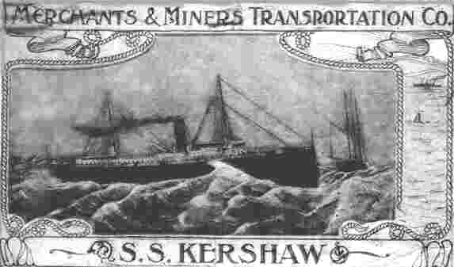
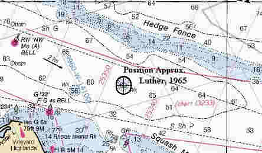

Link Index
MWDC
Home Page
Shipwrecks Page
Albert Galatin
Alice M. Colburn
Alice M. Lawrence
Ardandhu
Barge and Crane
California
Charles S. Haight
Chelsea
Chester Poling
City of Salisbury
Corvan
Dixie Sword
Edward Rich
French Van Gilder
Henry Endicott
Herbert
Herman Winter
Hilda Garston
HMCS St. Francis
James Longstreet
John Dwight
Kiowa
Lackawanna
Lunet
Mars
Pemberton
Pendleton
Pinthis
Port Hunter
Pottstown
Romance
Seaconnet
Trojan
USS Grouse
USS New Hampshire
USS Triana
USS Yankee
USS YSD
Vineyard Sound
Lightship
|

Description: Freighter; Steel
Dimensions:length - 282 ft. , width - 42 ft. ; depth - 16.2 ft.
Tonnage: gross - 2741, other -
Propulsion: Steam; Single propeller
Machinery: 3 cylinder Triple Expansion engine, cylinder diameters 28", 45", 72" with a stroke of 54", 3100 Indicated Horsepower; 4 Scotch Boilers
Cargo: Freight
The Shipwreck
Date Sunk: June 1, 1928.
Cause: Collision.
Location: Nantucket Sound, off East Chop, 7 miles East of Woods Hole.
Coordinates: Latitude, 41o - 28.9' N Longitude,70o - 31.9' W
Loran: 14094.6 and 43922.1
The sinking of the Kershaw by the Dollar Company Liner President Garfield has been described as one of the most spectacular collisions ever witnessed in New England waters. In the early morning hours of June 1, 1928 the stars were shining, the moon was bright and the water was hardly rippled by wave or swell. Yet, with visibility estimated at 10 to 15 miles the two steamers collided!
Kershaw left Boston at 5PM, April 30th bound for Norfolk, Virginia, with a cargo described as freight. The President Garfield was on the last leg of her 14th round the world voyage. Having discharged most of her passengers and cargo at New York she was bound for Boston. At Garfield's helm was local pilot Capt. Ralph W.C. Smith, the vessel's Captain, Albert Wilson, was in his cabin.
The two steamers sighted one another while still miles apart. Signals were exchanged and according to shore witnesses both ships carried the proper lights and lookouts. It was later determined the collision was the result of a miscommunication of whistle signals. Both crews testified that the other did not give the proper signals. Shortly after 1:30PM, with Kershaws last signal blasting from her whistle, the President Garfield plowed into the freighter's port side just forward of the bridge. The force of the impact tossed the pilothouse overboard, with Captain Brooks, the ships' quartermaster and the officer of the watch within. The three men scrambled onto the roof of the floating wreckage and were later rescued.
The collision was heard for miles, Miss Cora Fisher of Oak Bluffs witnessed the disaster from the seat of an automobile parked near the steamboat landing. "It was like a strange dream," Miss Brooks said. "The moonlight was shining brightly and I could see both ships come together very plainly. I just couldn't believe my eyes. When I heard the thunderous crash a few seconds later I knew it was true…never had I felt so small and helpless". Aboard the liner Miss Mildred Slater of Belfast, Maine, was awakened by the crash. "It was not so much like the meeting of two strong objects," Miss Slater said, "as it was the strong hitting the weak."
Water poured into Kershaw's hold, the engine room and bunker. Many of those below deck were killed when seawater reached the boilers. Superheated metal first contracted, lost its structural integrity then exploded as the pressure within was released. Fearing Kershaw might capsize, Captain Wilson kept the liner's bow firmly wedged in the breech until the freighter sank from beneath him. Five minutes after the collision Kershaw's bow rose "up into a convulsive twist" as she dropped stern first beneath the surface, carrying seven of her crew to their doom.
The President Garfield remained in the area of the sinking until dawn, looking for survivors and assessing her own damage. At 6:30AM after placing a buoy to mark Kershaw's grave, the liner proceeded to Boston with the freighter's survivors.
Back to Top
Dive Site Conditions
Depth in feet: maximum - 85; minimum - 65.
Visibility in feet: average - 15
Dynamited as a navigational hazard her wreckage has been reduced to a mass of twisted steel.
October 31, 1999, three members of the MetroWest Dive Club explored Kershaw's remains. Lying near a shipping channel the wreckage covers an area roughly the size of a football field. Boat traffic can be hazardous but is lesser in the early spring and late fall so plan your dives accordingly. Two of the steamers massive Scotch boilers provide relief and attract fish like Tautog.
Shifting sands often uncover unexpected finds. On this trip one of Kershaw's running lights was recovered.
Click on the image to go to the MapTech Map Server,
for additional navigation information.

Back to Top
Historical Background
Constructed: year - 1899; where - Wilmington, Delaware.
builder - Harlan & Hollingsworth Co.
Construction details: 4 decks; 7 bulkheads
Crew: 40 ; Master: Capt. E.S. Brooks
Owners: Merchants & Miners Transportation Co., 112 South Gay St..
Home or Hailing Port: Baltimore, Maryland
Former Name(s) and date(s):
Official number: 161119Country: U.S.A..
Other Comments:
Back to Top
Salvage
1929 - cleared by dynamite, as a hazard to navigation.
Back to Top
Sources:
Boston Globe, Evening; June 1, 1928
Boston Globe, Morning; June 2, 1928
Boston Globe, Sunday; June 3, 1928
Fishable Wrecks and Rockpiles; Coleman & Soares, 1989
MapTech Mapserver
Merchant Vessels of the United States; 1927
Peter Reagan, MetroWest Dive Club
The Fisherman, magazine; February 16, 1989
The Record, "American Lloyds", American Bureau of Shipping; 1927
Wrecks Below; Luther, 1958
Back to Top
These files are under construction. Any information, specifically dive site related, would be greatfully appreciated.
Send comments to: Chris Hugo
Copyright © 2000 by Christopher C. Hugo
Massachusetts Board of Underwater Archaeological Resources
All Rights Reserved
|